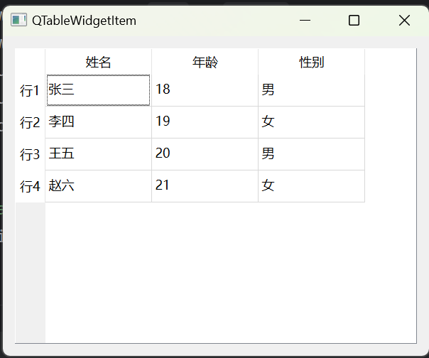
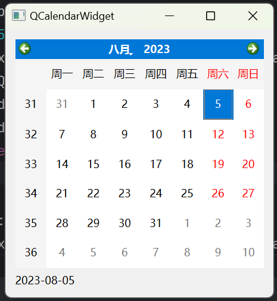
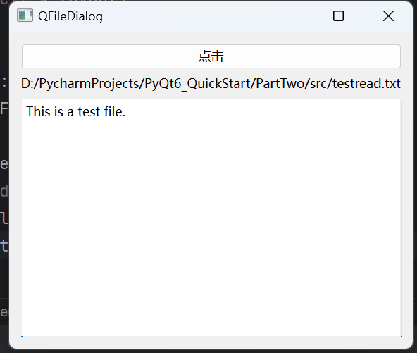

使用 PyQt6 第八篇
QFontComboBox
QFontComboBox 继承自 QComboBox，用于显示系统中所有的字体，可以通过 setCurrentFont() 方法设置当前字体，通过 currentFont() 方法获取当前字体。
QFontComboBox 案例
创建 QFontComboBoxDemo.py 文件
1 | import sys |
QTableWidgetItem
QTableWidgetItem 是一个表格控件，可以用于 QTableWidget 和 QTreeWidget 中，用于显示表格中的每一个单元格，可以通过 setText() 方法设置文本，通过 text() 方法获取文本。
QTableWidgetItem 案例
创建 QTableWidgetItemDemo.py 文件
1 | import sys |
效果图：

QCalendarWidget
QCalendarWidget 是一个日历控件，可以通过 setCurrentPage() 方法设置当前页，通过 selectedDate() 方法获取当前选中的日期。
QCalendarWidget 案例
创建 QCalendarWidgetDemo.py 文件
1 | import sys |
效果图：

QInputDialog
QInputDialog 是一个输入对话框，可以通过 getText() 方法获取用户输入的文本，通过 getInt() 方法获取用户输入的整数，通过 getDouble() 方法获取用户输入的浮点数。
QInputDialog 案例
创建 QInputDialogDemo.py 文件
1 | import sys |
QColorDialog
QColorDialog 是一个颜色选择对话框，可以通过 getColor() 方法获取用户选择的颜色。
QColorDialog 案例
创建 QColorDialogDemo.py 文件
1 | import sys |
QFontDialog
QFontDialog 是一个字体选择对话框，可以通过 getFont() 方法获取用户选择的字体。
QFontDialog 案例
创建 QFontDialogDemo.py 文件
1 | import sys |
QFileDialog
QFileDialog 是一个文件选择对话框，可以通过 getOpenFileName() 方法获取用户选择的文件，通过 getOpenFileNames() 方法获取用户选择的多个文件，通过 getSaveFileName() 方法获取用户选择的保存文件的路径。
QFileDialog 案例
创建 QFileDialogDemo.py 文件
1 | import sys |
效果图：

QMessagebox
QMessagebox 是一个消息框，用于显示消息，可以通过 setWindowTitle() 方法设置标题，通过 setText() 方法设置消息内容，通过 setIcon() 方法设置图标，通过 setStandardButtons() 方法设置按钮，通过 exec() 方法显示消息框，通过 clickedButton() 方法获取点击的按钮。
QMessagebox 案例
创建 QMessageboxDemo.py 文件
1 | import sys |